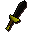

Black dagger

| Config name | black_dagger |
| Item id | 1217 |
| Value | 240 gp |
| Weight | 1lb |
| Members | No |
| Tradeable | Yes |
| Stackable | No |
| Equip slot | righthand |
| Options | Wield |
| Category | weapon_stab |
| Defined in | scripts/skill_combat/configs/melee/daggers.obj |
| Equipment stats | Stab att 10, Slash att 5, Crush att -4, Magic att 1, Magic def 1, Strength 7 |
Black dagger
A vicious black dagger.
Show 1 ground spawn on the world map → Open in knowledge graph →
Dropped by
| NPC | Level | Quantity | Rarity | Via | Notes |
|---|---|---|---|---|---|
| 37 | 1 | 1/128 (0.78%) | |||
| 70 | 1 | 1/128 (0.78%) |
Sold at
| Shop | Shopkeeper | Stock |
|---|---|---|
| Varrock Swordshop. | 4 |
Ground spawns
| Area | Coordinates | Level | Count | Map |
|---|---|---|---|---|
| Red Dragon Isle | 3180, 3824 | 0 | 1 | view |
Referenced in scripts
scripts/_test/scripts/cheats/cheat_bank.rs2scripts/drop tables/scripts/chaos_druid_warrior.rs2scripts/drop tables/scripts/salarin_the_twisted.rs2scripts/levelrequire/scripts/tier10.rs2scripts/minigames/game_trail/scripts/easy/trail_clue_easy_reward.rs2scripts/player/scripts/cracker.rs2